Entourage
Stephen Klancher
...has seen 4
...has seen 0.1 hours
...has not seen 1.5 hours

Timeline
Most Recent:
Exodus
...has seen 4
...has seen 0.1 hours
...has not seen 1.5 hours
Timeline
Most Recent:
Exodus
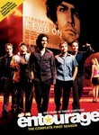

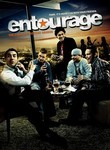

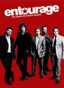
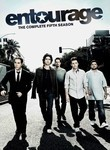
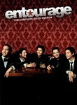
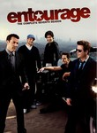
EntourageStephen Klancher ...has seen 4 ...has seen 0.1 hours ...has not seen 1.5 hours Timeline Most Recent: Exodus 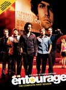 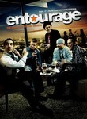 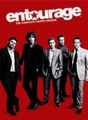 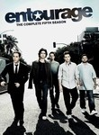 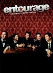 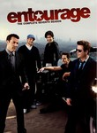 Watched an episode not known by IMDb? |